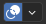

Viewport Overlays
Reference
- Mode:
All Modes
- Header:

Clicking the icon toggles all overlays in the 3D Viewport. The drop-down button displays a popover with more detailed settings, which are described below.
Next to the Viewport Overlays popover could be a second popover. The availability of these options depend on the mode the 3D Viewport is in or what type of object is selected. These settings are described later on in this page.
General
The following options are always present, independent of the current mode. Some of the overlays can be customized in the Viewport Preferences.
Guides
- Grid
Show grid in orthographic side view.
- Floor
Show the ground plane in perspective view.
- Axis
Show the X, Y and/or Z axis lines.
- Scale
The distance between lines in the grid/floor.
- Subdivision
The number of subdivisions between grid lines.
- Text Info
Show various bits of information in the top left corner of the viewport.
View Perspective – Name of the View Perspective, such as “Top Orthographic” or “User Perspective.”
Playback Frame Rate (FPS) – Displays the Frames Per Second at which the animation is playing. By default, Blender goes through every single frame, which may result in an FPS that’s lower than intended (and the animation playing slower than realtime); the FPS turns red in this case. You can change this behavior in the Playback popover of the Timeline.
Object Info – Shows the current frame in parentheses, followed by the names of the selected Collection and the active object. When applicable, also shows the selected Shape Key and (in angle brackets) the Marker on the current frame. If the object has a keyframe on the current frame, the Object Info is displayed in yellow.
Grid Resolution – When the view is aligned to a world axis (see Viewpoint), the Text Info additionally shows the smallest distance between two parallel grid lines.
- Statistics
Show information about the amount of objects and geometry. Note that the counters depend on the current selection. For example, selecting a mesh gives info on the number of vertices, edges, and faces, while selecting a light shows the number of lights in the scene.
Objects – Number of the selected objects and the total count.
Geometry – Displays information about the current scene depending on the mode and object type. This can be the number of vertices, faces, triangles, or bones.
- HDRI Preview
Show two spheres, one glossy and one diffuse, to preview the HDRI that’s being used for world lighting. While HDRIs can be used in both the Material Preview and Rendered shading modes, the HDRI Preview overlay is only available in the former.
- 3D Cursor
Show the 3D Cursor.
- Annotations
Show annotations.
Objects
- Extras
Show objects that don’t have geometry (such as empties, cameras and lights).
- Light Colors
Shades the outline of light objects to the color the light produces.
- Relationship Lines
Show dashed lines indicating parent or constraint relationships.
- Outline Selected
Show an outline around selected objects.
- Bones
Show Bones.
- Motion Paths
Show the motion path overlay.
- Origin
Show the origins of the selected objects.
- Origin (All)
Show the origins of all objects.
- Bone Wireframe Opacity
The maximum opacity used for bones drawn in the Wireframe shading mode (or in Solid shading mode with X-Ray active). This is helpful when it is necessary to reduce clutter and focus on the mesh rather than bones.
Geometry
- Wireframe
Display mesh edges. Similar to Wireframe Shading, but displays edges on top of existing shading. The value slider adjusts which edges to display: lower values hide edges on surfaces that are almost flat, while a value of 1 shows all edges.
- Opacity
The opacity of the displayed edges, from 0 (invisible) to 1 (fully opaque).
- Fade Inactive Geometry
In modes other than Object Mode, fade out objects that you’re not working on. The slider controls how much they’re faded out.
- Face Orientation
Show faces whose normal is pointing towards the camera in blue, and faces whose normal is pointing away from the camera in red. This lets you quickly check for faces that are oriented incorrectly: the outside surface of an object should typically be all blue.
Motion Tracking
Show the motion tracking overlay.
- Camera Path
Show the reconstructed camera path.
- Marker Names
Show the names for reconstructed track objects.
- Tracks
Change the display of the reconstructed tracks: plain axes, arrows and so on.
- Size
Change the display size of the reconstructed tracks.
Mesh Edit Mode Overlays
The following options are available when in Mesh Edit Mode.
- Edges
Highlight selected and partially selected edges. Only affects vertex and face selection modes, as edges are always highlighted in edge selection mode.
- Faces
Highlight selected faces. Affects all selection modes.
- Center
Show face center points in solid shading modes. (They’re always shown in wireframe shading mode.)
Only affects face selection mode.
- Creases
Display edges marked with a crease for the Subdivision Surface Modifier.
- Sharp
Display sharp edges, used with the Edge Split modifier.
- Bevel
Display weights created for the Bevel Modifier.
- Seams
Display the UV unwrapping seams.
Shading
- Retopology
Hide the solid mesh and offset the overlay towards the view. Selection is occluded by inactive geometry, unless X-Ray is enabled
- Offset
Amount to offset edit mesh in front of other geometry.
- Vertex Groups Weights
Display weights in Edit Mode.
- Zero Weights
Display unreferenced and zero-weighted areas in black. This helps to identify areas with very low weights that have been painted onto.
- None:
Vertices are displayed in the usual way.
- Active:
Vertices are shown in black if they have no weight in the active vertex group.
- All:
Vertices are shown in black if they have no weight in any vertex group.
Mesh Analysis
Show the Mesh Analysis overlay.
Measurement
Show numerical measures of the selected elements. The Units can be set in the Scene properties.
- Edge Length
Show the length of selected edges.
- Edge Angle
Show the angle of selected edges between two faces.
- Face Area
Show the area of selected faces.
- Face Angle
Show the angle of selected face corners.
Tip
Geometry connected to the selection is shown while transforming, allowing you to move a vertex and see the connected edge lengths for example.
Note
These values respect the Transform Space in the Sidebar. Use Global if you want the object’s scale to be applied to the measurements.
See also
The Measure tool for measuring arbitrary distances and angles.
Normals
Display vertex normals
Display face normals at vertices (split normals)
Display face normals
- Size
The size to show the selected normals.
- Constant Screen Size Normals
Keep the size of normals constant in relation to the zoom level.
Developer
These overlays are only available if Developer Extras is enabled in the Interface Preferences.
- Indices
Display the indices of selected vertices, edges, and faces.
Freestyle
These settings apply to the Freestyle line art renderer.
- Edge Marks
Display Freestyle edge marks.
- Face Marks
Display Freestyle face marks.
Sculpt Mode Overlays
Vertex Paint Overlays
- Stencil Mask Opacity
Does nothing. (Stencil masks are only available for texture painting.)
- Show Wire
Display mesh edges in white (unlike the Wireframe overlay which shows them in black).
Weight Paint Overlays
- Opacity
The opacity of the overlay.
- Zero Weights
Display unreferenced and zero-weighted areas in black. This helps to identify areas with very low weights that have been painted onto.
- None:
Vertices are displayed in the usual way.
- Active:
Vertices are shown in black if they have no weight in the active vertex group.
- All:
Vertices are shown in black if they have no weight in any vertex group.
- Show Weight Contours
Show contour lines formed by points with the same interpolated weight.
This visualizes weight variations too small to be seen from colors and can be useful for judging the smoothness and consistency of gradients, e.g. when using smoothing tools and brushes.
- Show Wire
Display mesh edges in white (unlike the Wireframe overlay which shows them in black).
Texture Paint Overlays
- Stencil Mask Opacity
Opacity of the stencil mask overlay.
Pose Mode Overlays
- Fade Geometry
Show the bones on top and face other geometry to the back. The opacity can be controlled with the slider. Only available in Pose Mode.
Grease Pencil
These overlays are available when a Grease Pencil object is selected.
- Onion Skin
Show ghosts of the keyframes before and after the current frame. If Multiframe is enabled, ghosts of the selected keyframes are shown instead. See Onion Skinning.
- Canvas
Display a grid over the Grease Pencil drawing plane. The opacity of the grid can be controlled with the slider. When using the Canvas X-Ray option, objects are drawn behind the canvas grid.
- Fade Inactive Layers
Decrease the opacity of all the layers in the object other than the active one. The opacity factor can be controlled with the slider.
- Fade Inactive Objects
Cover all of the viewport except the active Grease Pencil object with a full color layer to improve visibility while drawing over complex scenes.
- Fade Grease Pencil Objects
Include or exclude Grease Pencil objects.
- Edit Lines
Show edit lines in Edit Mode.
- Only in Multiframe
When Multiframe is enabled and keyframes other than the current frame are selected, strokes on those keyframes are displayed as just their edit lines – the strokes themselves are hidden. Note that this does not affect Onion Skinning.
- Stroke Direction
Toggle the display of the selected strokes’ start points (green) and end points (red) to visualize their direction.
- Material Name
Show material name next to the selected strokes.
- Vertex Opacity
Opacity for vertices (points) and edit lines in Edit and Sculpt Mode.
- Vertex Paint Opacity
The opacity of the vertex color overlay in Vertex Paint Mode and Draw Mode. Note that in Draw Mode, vertex paint is only visible in the Material Preview and Rendered shading modes by default. To see it in Solid mode, you either need to use Vertex Paint Mode, or set the Color shading setting to Attribute.
- Handles
When Curve Editing is active, this option controls how curves are displayed in the 3D Viewport.
- None:
No handles are displayed, only the control points.
- Selected:
Only handles for selected control points are displayed.
- All:
All the handles are displayed.